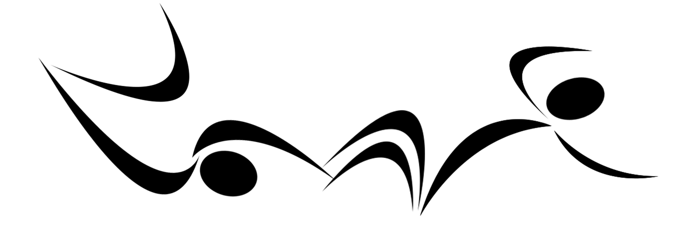
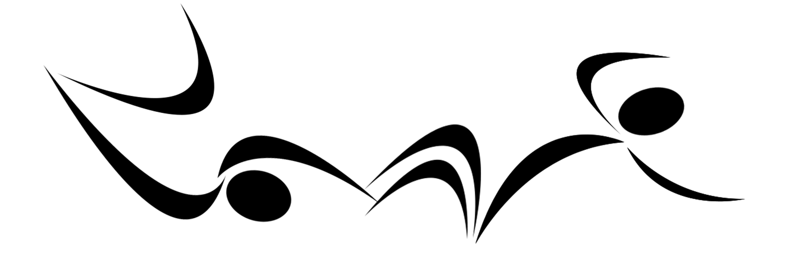

CURSO 1
➢ Adaptação ao Meio Aquático “AMA”
Presencial 100% Prático
Neste curso você aprenderá um novo método (dividido em 5 etapas) do processo de desenvolvimento da adaptação ao meio aquático.
Duração do curso: de 4 a 5 horas
O curso será dividido em 5 etapas de desenvolvimento:
- • Adaptação vertical;
- • Combinações verticais;
- • Adaptação horizontal;
- • Deslocamentos e giros;
- • Combinações verticais/horizontais e auto-salvamento;
➢ Avaliação e critérios para introdução dos nados.
Materiais utilizados no curso:
Maiô ou sunga, touca, óculos, clip nasal.
CURSO 2
➢  ➢ 
➢ 
Presencial 100% Prático
Curso sobre as 6 etapas do processo de ensino, aprendizagem e desenvolvimento dos nados borboleta, costas, peito e crawl, saídas e viradas (do iniciante ao atleta de rendimento).
Duração do curso: de 4 a 5 horas
Conteúdo:
- • Habilidades critério para introdução dos 4 nados;
- • Processo de formação em 6 etapas:
- livre, básico, intermediário, fundamental, avançado e formado;
- • Referências técnicas básicas e específicas;
- • Referências de coordenação para aulas, treinos e competições;
- • Habilidades combinadas, complementares e exploratórias;
➢ Estratégias básicas e específicas utilizadas nas diferentes distâncias/provas.
Materiais utilizados no curso:
Maiô ou sunga, touca, óculos, clip nasal.
CURSO 3
➢ Filmagem e análise biomecânica .
Presencial “Teórico e Prático"
A filmagem é uma excelente estratégia/ferramenta indispensável e complementar em todo processo de ensino para professores, treinadores, biomecânicos e pesquisadores. Nesse curso você vai aprender quais os materiais/software utilizados para filmagem e análise, como filmar, identificar, analisar, como aplicar nos treinos e estratégias de competição.
Duração do curso: de 6 a 8 horas
Conteúdo:
- • Materiais e câmeras para as filmagens aérea e aquática;
- • Aplicativos e softwares (para celular e computador) para edição, tratamento de dados e análises;
- • Análises básicas de velocidade média, frequência, comprimento de braçadas;
- • Análises do Índice de respiração do nado crawl;
- • Análise do Índice de coordenação dos 4 nados;
➢ Interpretação e aplicação em treinos e estratégias de competição.
Materiais utilizados no curso:
Notebook, cronômetro, celular, bastão selfie e câmera de ação (para filmagens e análise).
Opcional - Maiô ou sunga, touca, óculos (para o nadador que será filmado).